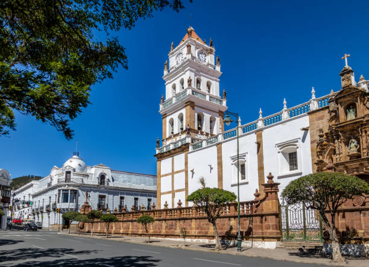
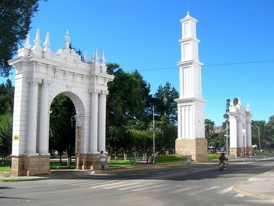

TURISMO
Sucre, la capital constitucional de Bolivia, es una joya colonial ubicada en el corazón de los Andes. Conocida como la "Ciudad Blanca" por sus edificios encalados, Sucre es un destino que combina historia, cultura y belleza arquitectónica. Fundada en 1538, ha sido escenario de importantes acontecimientos históricos, como la firma del Acta de la Independencia de Bolivia en 1825.
Lugares mas visitados

CATEDRAL METROPOLITANA

CATEDRAL METROPOLITANA